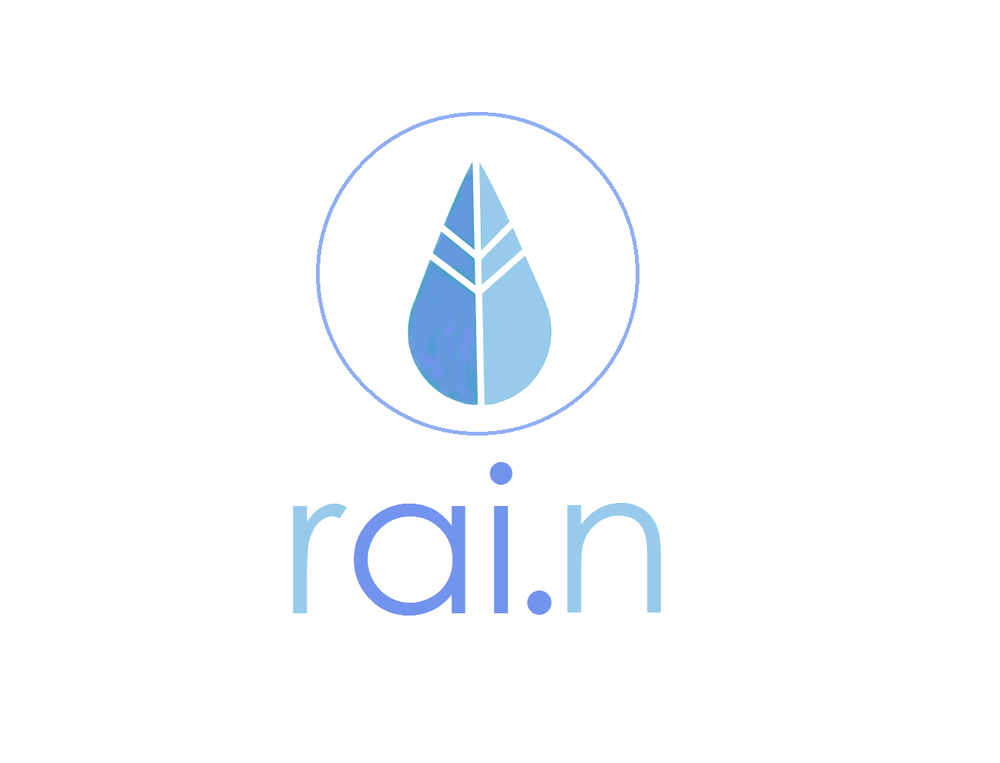
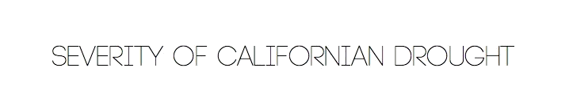

RECOMMENDED WATERING TIME: 3AM
 WEATHER TYPE: MOSTLY CLOUDY
WEATHER TYPE: MOSTLY CLOUDY


\n
rai.n is a website that uses machine learning generated data to help reduce water waste globally.
Kevin Xia is a sophomore in Computer Science whos primary interest is in machine learning. He developed the machine learning algorithm to predict future weather conditions, and was instrumental in data analysis and algorithm construction. Janice Huang is a sophomore in Computer Science also interested in machine learning. Janice worked on the UI of the product, the website development, as well as data pre-processing. Nikhil Dave is a sophomore in Biomedical Engineering interested in UI development and graphic design work. Nikhil worked on the user interface of the project, finding relevant weather data, as well as the development and creation of graphic designs. Valene Tjong is a sophomore in Economics interested in UI and graphic design work. She worked extensively in the creation and development of the user development and creation of graphic designs. The whole team was instrumental in the overall project’s design and implementation.